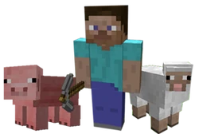

Minecraft is a game about placing blocks to build anything you can imagine. At night monsters come out, make
sure to build a shelter before that happens. It also has music by C418! So far 21,961,523 people have
registered and 4,937,844 people bought the game. More stats here.

Play Now
Play Minecraft Classic (Outdated, but free)
Join us on Facebook
Join the Minecraft community on Facebook by liking
our page facebook.com/minecraft.
Looking for this cool little thing?
The Word of Notch
Read up on the latest Minecraft development in
Notch's personal blog.
- Hype!
19 days ago - A poll letting us snoop
about a month ago - Guide to clothes, by hole count
about a month ago - Coding skill and the decline of stagnation
about a month ago - xcom
2 months ago
Twitter / @notch
Notch also has a Twitter. We strongly suggest
you follow his flabbergasted tweets
- In more serious news: http://t.co/UHWvZPoP
about an hour ago
- Haha, vimeo removed the (old) first creeper reveal
video because it was a "gameplay video". Nice!
about an hour ago
-
This GDC thing is getting in the way of my coding
and tweeting. I don't even know who I am any more!
about 8 hours ago
-
RT @thatgamecompany: In case you missed it,
#JourneyPS3 will be available for @PlayStation
Plus members tomorrow! http://t.co/y0bLLXOC